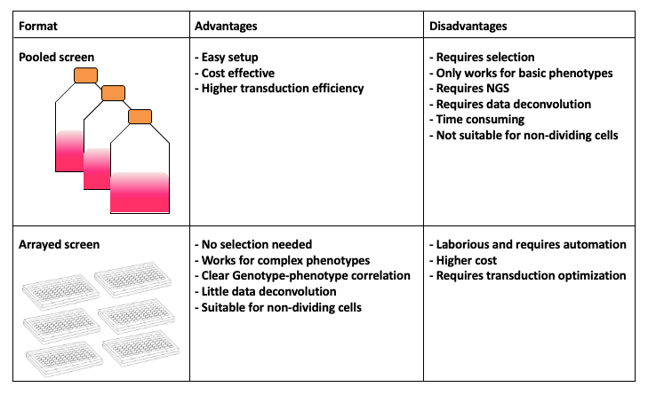
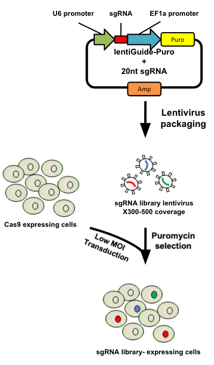
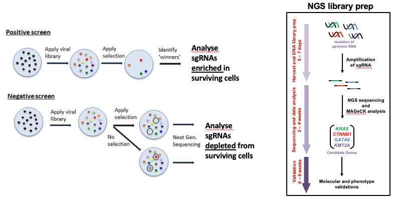

Introduction to CRISPR screen analysis
Contributors
Questions
What is CRISPR?
What is a CRISPR screen?
How is a guide RNA library created?
What is the difference between a negative and positive screen?
How to analyse CRISPR screen data?
Objectives
Describe what CRISPR screen data is
Outline how CRISPR screen data is generated and analysed
What is CRISPR?
.center[Overview of CRISPR knockout method]
.image-100[]
.pull-right[Adapted from Addgene]
Speaker Notes
- CRISPR stands for Clustered Regularly Interspaced Short Palindromic Repeats.
- It’s a bacterial immune system that has been modified for genome editing.
- It consists of 2 components - a guide RNA and a non-specific CRISPR-associated endonuclease called Cas9.
- The guide RNA is a short synthetic RNA composed of a scaffold sequence necessary for Cas9-binding and ~20 nucleotide spacer sequence that binds to the genomic target.
- Cas9 induces a double-stranded break within the target DNA.
- This results in in-frame amino acid deletions, insertions or frameshift mutations leading to premature stop codons within the targeted gene.
- With CRISPR knockout methods, ideally the end result is a loss-of-function mutation within the targeted gene.
- There are also CRISPR inhibition and activation methods but in this tutorial we focus on knockout.
What is a CRISPR screen?
.center[CRISPR screens enable high-throughput functional interrogation of a genome]
.image-100[]
Speaker Notes
- The ease of generating guide RNAs makes CRISPR one of the most scalable genome editing technologies.
- It can be used for genome-wide screens, enabling systematic targeting of tens of thousands of genes, with one gene targeted per cell.
- With these screens we can identify the functions of genes, such as those essential for cell survival, drug resistance or sensitivity.
- Pooled or arrayed screens can be performed. In this tutorial we analyse data from a pooled screen.
How are the cells for the screen set up?
.pull-right[
.image-60[]
]
.pull-left[
-
Various sgRNA libraries available e.g Brunello, Gecko, Yusa and others
-
In this tutorial we use Brunello (77,441 sgRNAs: ~4 per human gene + 1000 non-targeting controls)
-
Cas9 expressing cells are transduced with sgRNA library
-
Whole genome screen should be carried out with min x300 guide representation
]
Speaker Notes
- Various guide RNA libraries are available and can be purchased.
- In this tutorial we use Brunello, which is a human genome-wide CRISPR knockout library in a lentiGuide vector.
- Cells expressing the Cas9 enzyme are transduced with the guide RNAs at a low Multiplicity of Infection (MOI), aiming for a minimum starting representation of 300 for each guide, and puromycin is used to remove cells without guides.
What is the difference between a negative and positive screen?
.image-100[]
.pull-right[Adapted from Addgene]
Speaker Notes
- CRISPR positive or negative screens can be performed.
- With a positive screen, few cells survive the treatment and we are interested in identifying genes whose guide RNAs increase (are enriched), indicating knockout of those genes leads to resistance.
- With a negative screen, most cells survive after the treatment. In that case, we are interested in identifying genes whose guide RNAs decrease (are depleted) compared to a control e.g. vehicle, indicating knockout of those genes increases sensitivity to the treatment.
- In this tutorial we analyse data from a negative screen.
-
Cells from the timepoints of interest are collected, genomic DNA is extracted, and the guide RNA region is amplified by PCR, followed by sequencing.
A workflow for CRISPR screen analysis
Speaker Notes
- This is an overview of the workflow used in the tutorial.
- We first prepare the sequencing reads, checking quality and trimming adapters.
- We then use the MAGeCK toolkit to analyse, followed by visualising results using volcano plots and identifying pathways.
Thank you!
This material is the result of a collaborative work. Thanks to the Galaxy Training Network and all the contributors! Tutorial Content is licensed under
Creative Commons Attribution 4.0 International License.
Tutorial Content is licensed under
Creative Commons Attribution 4.0 International License.